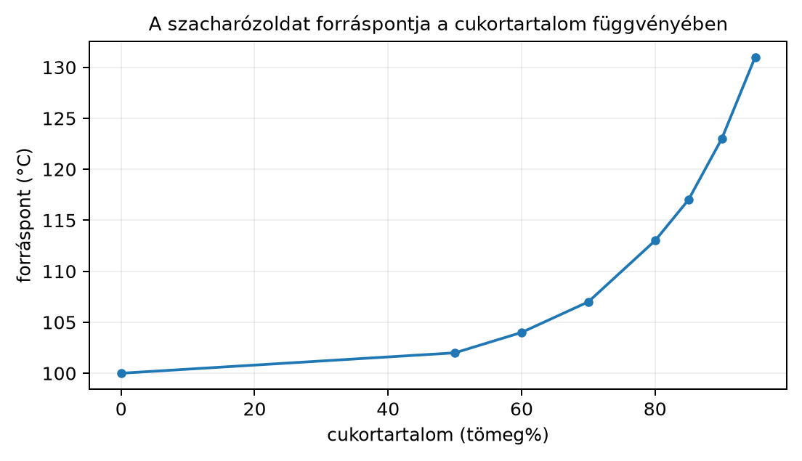
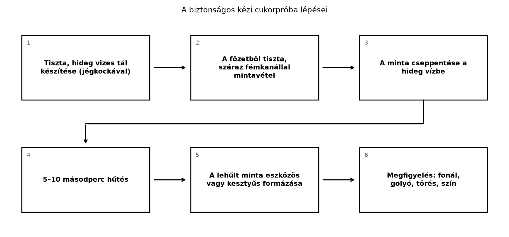

Egy esküvői tortához olasz vajkrémet készítesz. A telefonos recept csak annyit ír: „a szirupot főzd kicsit”. A hőfokot nem nézed meg pontosan, és a krém híg marad. Máskor egy bonbontöltelék nem dermed meg, vagy éppen túl kemény lesz. A hiba szinte mindig ugyanaz: a cukoroldatot nem a megfelelő cukorfőzési fokra főzted.
A cukorfőzés foka a cukrász legfontosabb „térképe” a cukor és a víz viselkedéséhez. Ha tudod, hogy az adott termékhez – fondánhoz, olasz habhoz, vajkrémhez, karamellhez – milyen fok kell, akkor a termék szerkezete, bedermedése és édessége is tartható lesz. Ebben az alfejezetben a fokok rendszerét, a hőmérséklet és a kézi próba összefüggését, valamint a felhasználásokat tanuljuk meg.
A tiszta víz tengerszinthez közeli nyomáson 100 °C-on forr. Ha cukrot oldunk benne, a forráspont megemelkedik. Minél töményebb az oldat, annál magasabb hőmérsékleten forr. Ezt mutatja az alábbi ábra.

A görbe eleinte lassan, később meredekebben emelkedik. Ez azt jelenti, hogy a főzés vége felé már kis vízvesztés is nagy hőmérséklet-emelkedést okoz. Ezért kell a hőmérő mellett a kézi próbát is ismerni.
Definíció. A cukorfőzési fok a forrásban lévő cukoroldat töménységét leíró gyakorlati kategória. A fokot a főzet hőmérsékletével és/vagy a forró oldatból vett minta hideg vízben történő lehűlés utáni állagával azonosítjuk. A fok megmutatja, mennyi víz távozott el, és milyen cukrászati felhasználásra alkalmas az oldat.
Definíció. A kézi próba a forró cukoroldatból vett kis minta hideg vízbe cseppentésével és gyors lehűtésével végzett mintaállapot-vizsgálat. A lehűlt minta puhasága, formálhatósága vagy törékenysége jelzi a főzet koncentrációját.
Összefüggés. A forráspontemelkedés oka, hogy az oldott cukormolekulák jelenléte csökkenti a víz gőznyomását, ezért magasabb hőmérséklet kell a forráshoz. A cukorfőzet hőmérséklete tehát gyakorlati mérőszáma a töménységnek.
A cukrászati gyakorlatban az alábbi fokozatokat használjuk. A hőfokok tájékoztató értékek, mert a légnyomás, a cukor fajtája, a fazék anyaga és a hőmérő kalibrálása is befolyásolja őket.
| Fok neve | Hőmérséklet-tartomány (°C, tájékoztató) | Kézi próba hideg vízben | Jellemző felhasználás |
|---|---|---|---|
| Szirup, vékony szál | 100–105 | A csepp szétterül, nem formálható | Áztatószirup, likőrök, kávé ízesítése |
| Rövid/közepes/hosszú fonál | 105–110 | A mintából az ujjak vagy pálca között vékony/rövid, majd hosszabb fonál húzható | Híg cukros áztatás, kandírozás, gyümölcsszirup |
| Gyöngy | 110–113 | A főzet felszínén apró, gyöngyszerű buborékok; a fonál már hosszú, de a minta még nem formálható | Cukrozott gyümölcs, egyes sűrűbb szirupok |
| Lágy golyó | 113–118 | A lehűlt minta puha, ujjal könnyen formálható golyóvá | Olasz habcsók, vajkrém, fondán, bonbontöltelék |
| Kemény golyó | 118–130 | A golyó már nem lapul el, rugalmasan ellenáll | Keményebb bonbontöltelék, egyes fudge-k |
| Lágy törés | 131–143 | A minta hajlítható, de nem ragad, hidegen pattan | Cukorkalapú díszek, ropogós bevonat |
| Kemény törés | 144–154 | A hidegben törékeny, üvegszerűen pattanva törik | Cukorfújás alapja, cukorkák, nyalókák |
| Karamell | 160 felett | A minta színe sárgásbarnától mélybarnáig változik, az íze kesernyés lehet | Karamellöntet, grillázs, dobos cukor, karamelldísz |
A 154–160 °C közötti sáv átmeneti: a cukor már barnulni kezd, de a kézi próba (törés) itt már nem ad új fokot. A sávhatárok szakirodalmanként 2–5 °C-kal eltérhetnek (ellenőrizendő: hazai cukrász szakkönyv); a fondán lágy golyó fokon, a grillázs csak a karamell fokon, a nyalóka csak a kemény töréssel készül.
A táblázatban szereplő hőfokok a hagyományos cukrászati gyakorlat szerinti, leggyakrabban használt tartományok. Az eltérő források eltérő sávokat adhatnak meg: (ellenőrizendő: gyakorlati útmutató vagy munkautasítás a konkrét üzemben).

A főzés kezdetén, 100–105 °C körül a cukoroldat még nagyon híg. A mintát hideg vízbe cseppentve az szétterül. Ez a fok nem ad szerkezetet, csak édességet és nedvességet. Ilyen fokot használunk például nagyobb sütemények áztatásához vagy gyümölcsteák és kávék cukrozásához.
Ha a 105–110 °C tartományban vagyunk, a lehűlt minta ragacsos, és a pálca vagy a kesztyűs ujjak között vékony fonalat húz. A fonál hossza a töménységgel nő. Ezt a fokot használjuk, ha a szirupnak már kell adnia valamennyi sűrűséget, de még folyékonynak kell maradnia, például híg áztatáshoz vagy kandírozáshoz. Olasz habcsókhoz ez a szirup még túl híg.
110–113 °C körül a főzet felszínén apró, gyöngyszerű buborékok jelennek meg, a pálcáról lehúzott szál hosszú, de a hideg vízbe cseppentett minta még nem formálható golyóvá. A főzet már sűrűbb, de a lágy golyó fok alatt van. Gyöngy fokon készülnek egyes cukrozott gyümölcsök és sűrűbb szirupok.
113–118 °C közötti főzetből vett minta a hideg vízben puha, kézzel vagy eszközzel könnyen formálható golyóvá. A golyó a tenyerünkön ellapul. Ez a fok kulcsfontosságú az olasz habcsókhoz, a vajkrémekhez, a fondánhoz és sok bonbontöltelékhez. Itt a cukoroldat már elég tömény ahhoz, hogy becsípődjön a hab- vagy emulziórendszerbe, de még elég rugalmas ahhoz, hogy puha, krémes szerkezetet adjon.
118–130 °C-on a hideg mintából kemény, rugalmasan ellenálló golyó formálható, amely nem lapul el; a sáv alsó része (kb. 118–122 °C) a puhább, felső része a keményebb állagot adja. Ezt a fokot akkor használjuk, ha a tölteléknek keményebbnek, jól darabolhatónak kell lennie.
131–143 °C-on a minta lehűlés után már nem formálható, hanem hajlítható, pattanva törik. Ebből készülnek a ropogós cukorbevonatok és olyan cukordíszek, amelyeknek meg kell tartaniuk az alakjukat, de még hajlíthatók. A grillázs nem ide, hanem a karamell fokhoz tartozik.
144–154 °C-on a főzetből vett minta hideg vízben üvegszerűen megkeményedik, és élesen, törékenyen pattan. Ez a cukorfújás, a nyalókák és néhány keménycukorka alapfoka. Ilyenkor már alig maradt víz az olvadékban.
160 °C fölött a cukor nemcsak koncentrálódik, hanem kémiailag is átalakul: bomlik, barnul és jellegzetes karamellízt kap. A szín a halvány aranysárgától a mélybarnáig változik. A karamell fok a dobos cukor, a karamellöntet, a grillázs és a díszek alapja. 180 °C fölött azonban gyorsan megég, keserű lesz, és kedvezőtlen bomlástermékek keletkeznek; ha a karamell olajos magot, tejet vagy tejszínt is tartalmaz (grillázs, tejkaramell), a Maillard-reakció miatt akrilamid is képződhet (ellenőrizendő: 2017/2158/EU rendelet alkalmazási köre). A karamellizálást ezért szigorúan figyelemmel kell kísérni.
Figyelem. A forró cukoroldat és a karamell súlyos égést okoz. A mintavételt csak biztonságos eszközzel, hosszú ujjú ruhában, szükség szerint védőkesztyűben és védőszemüvegben végezd. Bőrre tapadva a forró cukor tovább éget.
A kiadás interaktív változatában a cukorfőzési fok–hőmérséklet kalkulátor segíti a tanulást. Kiválaszthatod a kívánt felhasználást – fondán, olasz habcsók, vajkrém, grillázs, karamell –, és az ábra megmutatja a javasolt hőmérsékleti sávot, valamint a hozzá tartozó kézi próba nevét. A statikus tartalék ábra ugyanezt a táblázatot jeleníti meg színezett sávokkal.
Gyakorold a fokok felismerését hőmérővel és kézi próbával. Tanuld meg, hogyan veszel mintát forró cukorból biztonságosan.
Munkaruha, hajháló, ékszer le, kézmosás. A lábas, a kanál és a tál tiszta, zsír- és detergensmentes legyen. A cukorfőzetbe csak tiszta, száraz eszközzel nyúljunk, mert a szennyeződés kristályosodást indít.
A forró cukorral végzett gyakorlat tanműhelyi vagy üzemi környezetben, oktatás után és felügyelet mellett végezhető. Otthon háztartási tűzhelyen, kis adagban gyakorolj, de mindig tarts hideg vizet a közelben, és ne hagyd felügyelet nélkül a főzetet.
Az ábra felső sora a próba biztonságos menetét, az alsó két sor a nyolc fok mintáját mutatja a táblázat tájékoztató hőmérsékleteivel. A HTML-kiadásban a hőmérséklet-csúszka mozgatásakor a megfelelő fok mintájának képe jelenik meg (ugyanazokkal a sávokkal, mint a fenti kalkulátorban).
A hőmérő és a kézi próba együttesen használandó. A hőmérő kalibrálása elengedhetetlen; ha forrásban lévő tiszta vízben nem 100 °C-ot mutat, a mért értéket ennek megfelelően javítani kell.
A cukorfőzési fok várható elérése számolható a cukor- és vízmennyiség mérlegéből. A tömegszázalékos koncentráció:
A főzés során a cukortömeg állandó, a víztömeg csökken. A célkoncentráció eléréséhez szükséges elpárologtatott víz:
Ahol a kezdeti oldat tömege, a célkoncentráció.
Adott 600 g víz. Mennyi cukrot kell hozzáadni, hogy 65 tömegszázalékos oldatot kapjunk?
Megoldás. Keressük a cukor tömegét, .
Beszorzunk:
Tehát 600 g vízhez körülbelül 1114 g cukrot kell adni. Ellenőrzés: az összes tömeg 1714 g, a cukor arány , azaz 65%. ∎
1000 g 50 tömegszázalékos cukoroldatot fondánhoz szeretnénk felhasználni. A fondánnál jellemző célkoncentráció kb. 87 tömegszázalék (lágy golyó felső széle, kb. 118 °C, tájékoztató; ellenőrizendő: szakirodalmi táblázat). Mennyi vizet kell elpárologtatni?
Megoldás. A kezdeti oldatban a cukor: . A céloldat tömege, ha a koncentráció 87%:
Az elpárologtatott víz tömege:
Ellenőrzés: a maradékban kb. 74,7 g víz és 500 g cukor van, az össztömeg 574,7 g, a koncentráció , azaz 87%. ∎
Olasz habcsókhoz 1,2 kg cukrot és 0,36 kg vizet forralunk. A főzés során 0,18 kg víz elpárolog. Hány tömegszázalékos lesz a szirup? Értelmezd a fokot!
Megoldás. Kezdeti oldat tömeg: . Az elpárolgás után: . Cukortömeg: .
A 87% töménységű szacharózoldat forráspontja a fenti görbe szerint kb. 118–119 °C, ami a lágy golyó felső határa, a kemény golyó alja. Ez megfelel az olasz habcsók szirupjának (ellenőrizendő: konkrét receptúra és hőmérő). ∎
A cukorfőzet minőségét három szinten ellenőrizzük.
A jó fondánhoz, olasz habhoz vagy vajkrémhez készült szirup színtelen vagy enyhén gyöngyházfényű, kristálymentes, a próbája a receptúra szerinti fokot mutatja. A karamell színe egyenletes, illata édeskés, nem égett.
| Tünet | Ok | Megelőzés és javítás |
|---|---|---|
| A főzet idő előtt kristályosodik | Szennyezett eszköz, keverés a forralás késői szakaszában, nem fedték le az edényt | Tiszta eszközök; a forralás előtt keverjük el a cukrot; a falra tapadt kristályokat nedves kefével mossuk le; ha már kikristályosodott, kis mennyiségű glükózszirup vagy pár csepp citromlé segíthet, de a legbiztosabb új főzetet készíteni (ellenőrizendő: receptúra). |
| A fondán vagy vajkrém nem dermed meg | Alacsony hőfok, túl sok víz maradt, a szirup nem érte el a lágy golyó fokot | Hőmérő és kézi próba; ha a főzet még nem égett, vissza lehet forralni, de csak szakmai döntés után. |
| A karamell megégett, keserű, sötétbarna | Nem figyelték a hőfokot, a főzet 180 °C fölé ment, kedvezőtlen bomlástermékek keletkeztek (tej- vagy magtartalmú karamellnél akrilamid is képződhet) | A karamellizálást 160 °C fölött folyamatosan figyelni kell; égett karamell esetén a tételt selejtezni kell, nem szabad „megmenteni”. |
| A hőmérő félrevezet | Nem kalibrált, az edény falához ér, lassú válaszidejű | Forrásban lévő tiszta víznél ellenőrizni; a mérőt a folyadék közepén tartani; kézi próbával megerősíteni. |
| Ujjas kézi próba égést okoz | A forró mintát közvetlenül ujjal formázták | Mindig hideg vízben, legalább 5–10 másodpercig hűtött mintát, de alapból eszközt vagy kesztyűt használjunk. |
Egy vidéki cukrászdában új dolgozó készítette a bonbontöltelékhez a cukorszirupot. A munkautasítás szerint lágy golyó fokra kellett volna főzni. A dolgozó csak az időt figyelte, hőmérőt nem használt. A szirup kemény golyó fokra sűrűsödött, mert a tűzhely erősebb volt, mint otthon. A töltelék lehűlés után nem lett formálható, a bonbonlezárás lehetetlenné vált. A tételt selejtezni kellett, a dolgozó pedig heti termelési hibajegyzéket kapott.
A következő héten bevezették a kettős ellenőrzést: a cukorfőzetnél minden dolgozónak hőmérővel és kézi próbával is igazolnia kellett a fokot. A feljegyzést a HACCP-naplóhoz csatolták. A hasonló hiba többé nem fordult elő.
1. feladat (A). Párosítsd a hőmérséklet-tartományt a
fokkal!
a) 113–118 °C
b) 144–154 °C
c) 100–105 °C
d) 160–180 °C felett
2. feladat (A). 500 g vízhez mennyi cukrot kell adni, hogy 60 tömegszázalékos oldatot kapj? Írd le a számítás lépéseit!
3. feladat (B). Egy vajkrémhez 1,5 kg 45 tömegszázalékos cukoroldatból indulunk. A főzés végére 0,45 kg víz elpárolog. Hány tömegszázalékos lesz a szirup? Fok alapján alkalmas-e lágy golyóhoz?
4. feladat (B). Egy cukrász hallgatója a hőmérőjét forrásban lévő vízben 96 °C-nak méri. A cukoroldat főzésekor 114 °C-ot olvas le. Mi a tényleges hőmérséklet közelítőleg, ha a hiba állandó? Melyik foknak felel ez meg?
5. feladat (C). Hibaelemzés: egy fondán lágy, ragacsos marad, nem dermed meg. Sorold fel legalább három lehetséges okot, és mindegyikhez adj javítást vagy megelőzést!
6. feladat (D). Gyakorlati feladat: készíts tanműhelyben 300 g cukorból és 120 ml vízből cukorfőzetet. A hőfokot 5 percenként mérd, és végezz kézi próbát 105, 110, 118, 125 és 160 °C körül. Töltsd ki az alábbi megfigyelési lapot: idő, hőmérséklet, kézi próba eredménye, szín, egyéb észrevétel. Értékelési szempontok: biztonságos munkavégzés, a hőfok és a próba egyezése, a lap kitöltöttsége, takarítás.
1. feladat (A). a) Lágy golyó
b) Kemény törés
c) Szirup
d) Karamell
2. feladat (A). Keressük
-et,
ahol
.
.
Tehát 750 g cukor kell 500 g vízhez. Ellenőrzés: az össztömeg 1250 g, a
cukorarány
.
3. feladat (B). Kezdeti oldat: 1,5 kg, cukortartalom 45%, tehát . Elpárolgás után az oldat tömeg: . Koncentráció: . Ez a 64% töménység forráspontja 104–105 °C körül van, ami fonál/gyöngy tartomány, nem alkalmas lágy golyóhoz; további vízelpárologtatásra lenne szükség.
4. feladat (B). A hőmérő hibája: . Ha 114 °C-ot mutat, a tényleges hőmérséklet . Ez a lágy golyó fok határán van, a gyakorlati táblázat szerint még lágy golyónak tekinthető (ellenőrizendő: hőmérő kalibrációs jegyzőkönyv).
5. feladat (C). Lehetséges okok:
- A szirup nem érte el a lágy golyó fokot; túl sok víz maradt.
Megelőzés: kalibrált hőmérő és kézi próba.
- A főzet idő előtt kristályosodott, ezért a koncentráció nem követhető
jól. Megelőzés: tiszta eszközök, a falra tapadt kristályok
lemosása.
- A receptúra szerinti cukor-víz arány téves; ellenőrizni kell a
mérlegelést és a veszteséget. Javítás: ha a főzet még nem égett,
visszaforralással töményíthető, de csak szakmai döntés után.
6. feladat (D). Értékelési szempontok: a tanuló biztonságosan dolgozik, a hőmérőt és a kézi próbát együtt használja, a megfigyelési lap tartalmazza az idő, hőmérséklet, próba, szín adatokat, a munka végén a lábast és az eszközöket elmossa. A cukorfőzet felhasználható díszítőelemként, de élelmiszer-higiéniai szempontból a kóstolás csak a munkautasítás szerint történhet.
A cukorfőzési fok a forrásban lévő cukoroldat töménységét leíró gyakorlati kategória. A forráspont a koncentráció növelésével emelkedik; ezért a hőmérséklet mérése és a kézi próba együtt megbízhatóan jelzi a fokot. A leggyakoribb fokok növekvő sorrendben: szirup, fonál, gyöngy, lágy golyó, kemény golyó, lágy törés, kemény törés, karamell. A lágy golyó fok (kb. 113–118 °C) az olasz habcsók, a vajkrém és a fondán alapja; a kemény törés (kb. 144–154 °C) a cukorfújáshoz és a nyalókákhoz kell; a karamell (160 °C felett) a dobos cukor, a grillázs és a karamellöntet alapja. A hőfokok tájékoztató értékek, minden üzemben a hőmérő kalibrálásával és a receptúrával együtt használandók (ellenőrizendő: munkautasítás). A kézi próba biztonságos kivitelezése hideg vizes mintavétellel, eszközzel vagy kesztyűvel történik; forró cukorral csak védőfelszerelésben, felügyelet mellett dolgozunk. Továbbvitt eredmény. A hőfok–próba–felhasználás táblázatot használjuk a Hígító cukoroldat, áztatószirup és tojáshabos készítmények cukorfőzete, a A fondán készítése és a Karamell és olvasztott cukorkészítmények: dobos cukor, grillázs, cukorfesték alfejezetekben.